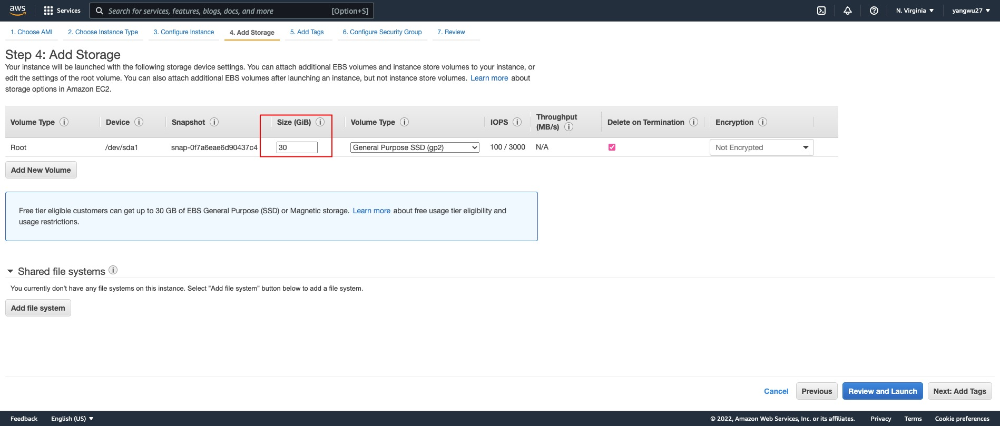

Step 1: AWS EC2
If you are working for an organization that uses AWS EC2, the chances are that your data team or IT department may already have an EC2 instance running. In that case, consult your cloud manager or supervisor or whoever manages your organization’s AWS account regarding the following:
The root user could create your IAM user account, which gives you certain access rights.
You would need to connect to EC2 via a Secure Shell (SSH) using a Command Line Interface (CLI), and so you need to obtain the AWS EC2
.pemprivate key file.You may also want to obtain the SSH commands that allows you to SSH into your organization’s EC2 instance.
The rest of the setup steps may differ quite a bit depending on whether or not you are using your organization’s EC2 instance or running your own. For the purpose of this post, however, we will create our own personal AWS account and EC2 instance. I find that practicing deploying an application using my own AWS account and EC2 instance has helped me ultimately set up the production environment on my organization’s EC2 instance. The first step, though, is to register for an AWS account, which is free of charge.
Launch an EC2 Instance and Select an AMI
Launch an EC2 instance by selecting an Amazon AMI.

Because many tutorials and resources online are based on the Ubuntu Server AMI, we will use this as well. Not only does this option have the free tier option but, based on my experience, it could also save us a lot of pain in having to deal with system requirements later on. The Ubuntu 20.04.1 LTS (at the time of writing this post) is a well documented operating system with a large user base and so trouble shooting is relatively easier in my experience compared to an AMI such as the Amazon Linux AMI 1, which is based on Red Hat Enterprise Linux (RHEL). If you work for an organization, you may not be able to choose which AMI to use. But the steps that follow should theoretically work with other AMI (for instance, we use the Amazon Linux AMI at our organization), but note that you may run into problems installing the required system libraries and packages needed for deployment and even for R packages.
Choose an Instance Type
We will choose t2.micro, which is free tier eligible. Depending on your needs for computing resources (for instance, installing R packages with complied code), you may run out of memory with 1 CPU and 1GB of RAM, so you could also consider other instance types. I recommend reading the following article to better understand the differences between instance types.

Configure Instance Details
We could leave this as default.
Add Storage
The default EBS volume size is 8 GB but we get up to 30 GB of General Purpose SSD via the free tier. See the documentation on EBS volume options.

Configure Security Group
Security groups function as virtual firewalls for your EC2 instances to control inbound and outbound traffic. By default, AWS blocks traffic from all ports except for port 22, which is the port we use to SSH into our instance. I use the following configuration based on mgritts’s article.
| Type | Protocol | Port Range | Source | Description |
|---|---|---|---|---|
| SSH | TCP | 22 | Anywhere: 0.0.0.0/0, ::0 | SSH |
| HTTP | TCP | 80 | Anywhere: 0.0.0.0/0, ::0 | Use nginx to password protect and set up proxy |
| Custom TCPI | TCP | 3838 | Anywhere: 0.0.0.0/0, ::0 | Default R Shiny server |
| Custom TCPI | TCP | 8787 | Anywhere: 0.0.0.0/0, ::0 | Default R Studio server |
Since our instance is utilized as a web server, we use security rules to allow IP addresses to access our instance using HTTP or Custom TCP so that external users can browse the content on our web server.
The second rule allows for inbound HTTP access from all IPv4 and IPv6 addresses.
The third and forth allow for displaying web data based port numbers.
Key Pair
The last step for setting up an EC2 instance is creating your .pem private key file, or select to use an existing key file provided by your organization.

Finally, launch your instance.
Elastic IP
An elastic IP address is different than our EC2 instance’s Public IPv4 address; in short, an Elastic IP address is allocated to our AWS account, and is ours until we release it. Therefore, this IP address can be reused for our EC2 instances. The re-usability of our IP may be useful when we want to upgrade or downgrade our EC2 instance type. Without an elastic IP address, a new Public IPv4 address will be used each time we stop and re-launch our instance. This means that any service that depends on our public IP will need to be updated. The benefit of an elastic IP address is that we can simply associate it to the new server. In other words, the elastic IP address allows us to mask the failure of an instance or software by rapidly remapping the address to a new instance in our account. The setup is as follows:

Select the Action drop down menu in the top right corner and choose Associate Elastic IP address. From now on, every time we make changes to our EC2 instance, we can simply re-associate this IP address to our new instance.